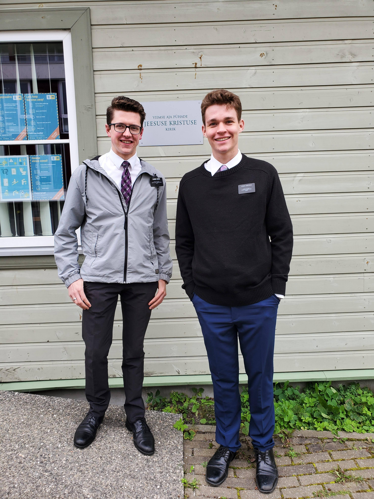
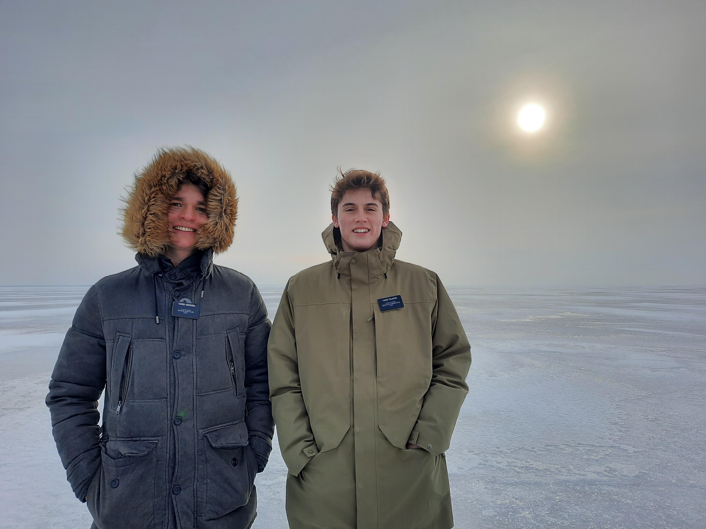
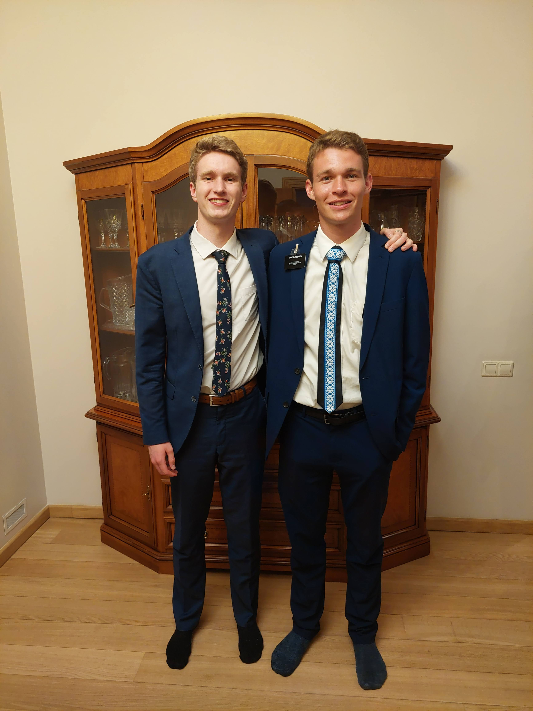
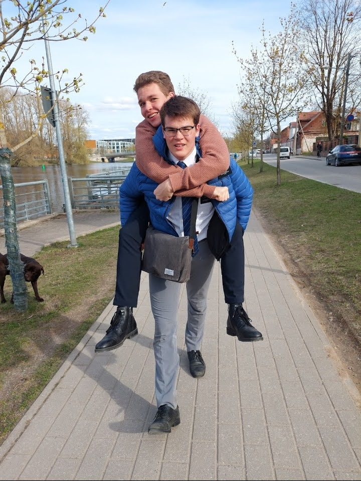
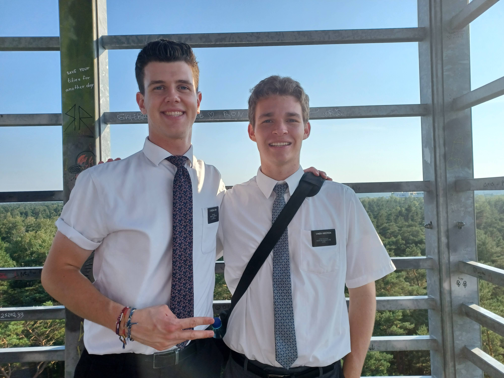
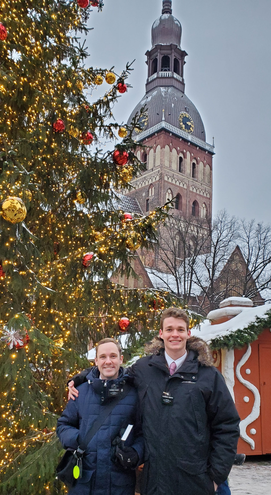
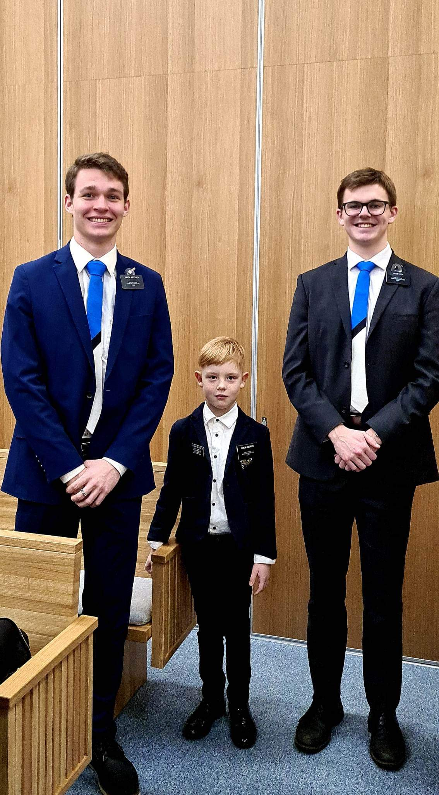
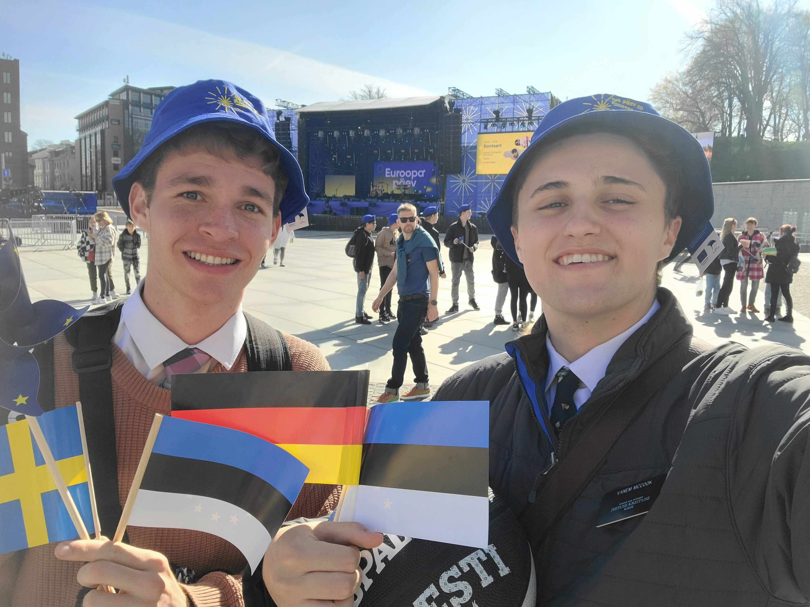

My Mission Companions
and what I learned from them
Carter Ward
Vanem Ward taught me a lot about myself. That I can do hard things. That if I work hard enough, I can achieve any goal. He showed through example that even if something isn't easy to do, if you need to do something you wouldn't normally do, or if something doesn't come naturally to you, that if its for God, then we do it anyways.
Connor Finlinson
I learned more from Vanem Finlinson than from anyone of my companions. This is because I was a new missionary and ready to learn and he taught me. His work ethic, high-energy, friendliness with people, and way he viewed missionary work left a deep impact on me that affected everything I did for the rest of my mission. I owe a lot to Vanem Finlinson.
Weston Judd
Vanem Judd was such a powerful teacher. When we went into lessons, he taught doctrines simply and explained concepts extremely well. He was exceptionally skilled at relating his own life experiences to the person who we were teaching and being a true friend to them. What better skill could there be?
Samuel Peel
Always the first word that has come to my head when I think of Vanem Peel and my time with him is loyalty. To God, to me, to being a consecrated missionary. His consistency with doing important things is so impressive. Vanem Peel always made me feel like I was a somebody and enabled me to be so much more. His humility as well is impressive. I respect and admire at an extremely high level.
Joshua Yeyna
Elder Yeyna felt like the older brother I never had. He always treated me right, as an equal, even though he was the senior companion and a couple years older than me. He taught me how important it was to show love to the other missionaries and to care about them.
Caleb Nelson
Vanem Nelson was like my clone. We viewed missionary work the same way. We learned things together. I learned a lot about consecration and thinking outside the box. He would come up with great ideas all the time for ways we could do missionary work for efficietnly. His testimony shown through his actions and I loved him for that.
Simon Cropper

Elder Cropper was so good at learning from everyone. He was so humble that he had no problem learning from any source. He was himself with everyone person he interacted with and a natural leader. He combined sound ethics and likeablness in a way that made him an amazing person to follow.
Lucas Peck
I respect Vanem Peck more than any other human I've ever met. I can't speak enough to his nobality, his love for others, and his deep understanding for the things of God. This is a man I look up to and always felt privelaged to serve with.
Max McCook
Vanem McCook made me a better man. This because of how diligent he was about improving himself. I'd see him changing and it inpsired me so much. I can't speak enough to his humility. He never questioned my counsel, but followed it as well as he could. This is an Elder I truly loved.